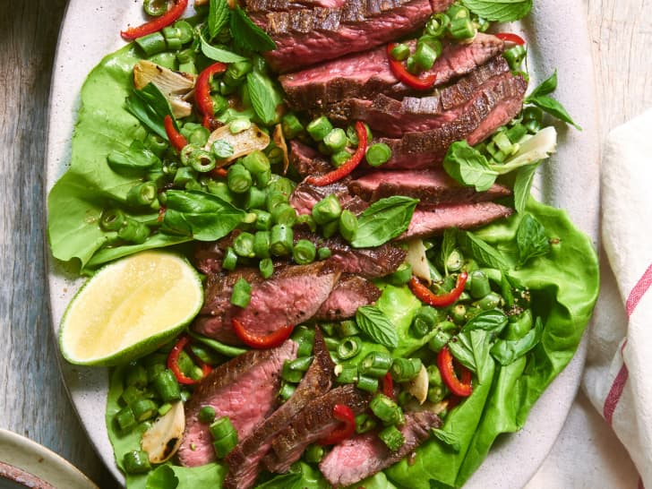

Steak Salad with Chile

This recipe gets an umami hit from fish sauce, sherry vinegar, and lime juice tossed with a mix of crunchy and tender veg, and is finished with scattered fresh herbs. This dish is so delicious it made a convert out of my own mother, who never eats steak. It’s a perfect filling-but-refreshing meal on a hot summer day.
Ingredients:
- Kosher Salt
- Freshly ground balck pepper
- 2 tablespoons of canola oil
- 5 cloves garlic, thinly sliced
- 1 tablespoon plus fish sauce
- 2 teaspoons sherry vinegar
- 1 medium lime, halved
- 2 sprigs fresh mint
- 3 fresh basil
Cooking Instructions:
-
Generously season the steak with salt and pepper on both sides. Let sit at room temperature for at least 15 minutes before cooking.
-
Heat a large cast-iron skillet over high heat until smoking. Add 1 tablespoon of the oil, swirl to coat, and immediately add 1 steak. Sear undisturbed until browned on the bottom, about 2 minutes, reducing the heat to medium-high if needed.
-
Flip the steak and add the garlic. Keep garlic slices at the colder region of the pan while steak sears, turning the garlic occasionally for even browning. Sear the steak for 1 to 2 minutes more for medium rare.
-
Transfer the steak to a clean plate to rest, and place the garlic in a medium bowl. Add the remaining 1 tablespoon oil to the pan, swirl to coat, and repeat searing with second steak. Meanwhile, add the fish sauce, sherry vinegar, juice from 1 lime halve, and several grinds of black pepper to the bowl with the garlic and whisk to combine.
-
Let the second steak rest for a few minutes. Meanwhile, add the green beans and sliced chili to the vinaigrette and stir to combine.
-
Slice the steak across the grain into 1/4-inch thick slices. Transfer any accumulated juices to the vinaigrette bowl.
-
Arrange the lettuce on a serving platter, then top with the sliced steak. Top with green bean mixture, then tear the mint and basil leaves over the green beans. Garnish with more black pepper and a squeeze of lime from the remaining lime halve.